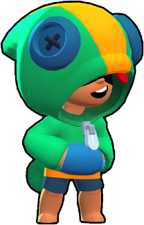

Леон – это легендарный боец, которого можно выбить из любого ящика. Он имеет средний урон и здоровье. Своей обычной атакой Леон бросает 4 сюрикена. Они способны нанести достаточно хороший урон вблизи. Используя Супер Леон становится невидимым на 6 секунд.
